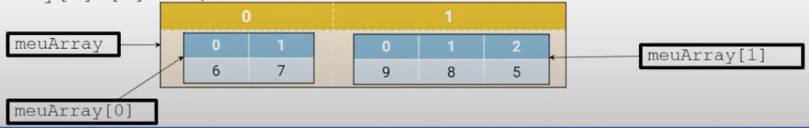

Disciplinas
-
PROGRAMAÇÃO ORIENTADA A OBJETOS-T01-2024-1 Concluído
Materiais
Vídeo 1 - [UFMS Digital] Programação Orientada a Objetos - Módulo 2 - Unidade 1. sendProfessor ministrante: Prof. Dr. Anderson Viçoso de Araújo
Conteúdo
Vetores (Arrays).
Arrays.
- Em Java, arrays ou vetores, são objetos que armazenam diversas variáveis do mesmo tipo.
- Eles são Variáveis de referência (objetos).
- Qualquer tipo permitido em Java pode ser armazenado em um array:
- Tipos primitivos;
- Referências de objetos;
- Outros arrays.
- O tamanho de um array precisa ser definido na criação;
- Cada item em um array é chamado de elemento, e cada elemento é acessado pela posição numérica (índice);
- As posições são numeradas a partir do zero;
- Exemplo: O nono elemento, por exemplo, é acessado na posição 8.
+---+---+---+---+---+---+---+---+---+---+
| 0 | 1 | 2 | 3 | 4 | 5 | 6 | 7 | 8 | 9 |
+---+---+---+---+---+---+---+---+---+---+
| | | | | | | | | |
| | | | | | | | | +--→ Índice 9 (décimo elemento)
| | | | | | | | +------→ Índice 8 (nono elemento)
| | | | | | | +----------→ Índice 7
| | | | | | +--------------→ Índice 6
| | | | | +------------------→ Índice 5
| | | | +----------------------→ Índice 4
| | | +--------------------------→ Índice 3
| | +------------------------------→ Índice 2
| +----------------------------------→ Índice 1
+--------------------------------------→ Índice 0 (primeiro elemento)
Utilizando os Arrays
- Para utilizar um array é necessário seguir os três passos abaixo:
- Declaração
- A declaração de um array diz ao compilador o nome do array e o tipo de elemento que será armazenado
- Construção
- Inicialização
Declarando um Array.
- Regra:
- '<'tipo_do_array>[] '<'nome_da_variável>
- Ou '<'tipo_do_array> '<'nome_da_variável>[]
- Exemplos:
- Declarando um array de tipos primitivos:
- int[] array ou int array[]
- Declarando um array que armazena variáveis de referência:
- User[] users;
- Nenhuma memória é alocada no momento da declaração
- Não faz sentido incluir o tamanho do array na declaração:
- Exemplo: int[5] pontos;
Construindo um Array.
- Para criar um array, o Java terá que saber quanto espaço alocar:
- É preciso especificar o tamanho do array no momento da construção;
- O tamanho será igual a quantidade máxima de elementos que
- array poderá armazenar
- Uma vez definido o tamanho do array este não pode mais ser alterado
- Quando o array é de referências para objetos, somente a memória ocupada pela referência é alocada
int[] intArray; //Declarando array unidimensional
intArray = new int[4]; //Construindo
String [][] stringMatrix = new String[10][20]; //Declarando e construindo um array bidimensional
Como o array aparece na memória:
Variável de referência do array → 1 2 3 4 ← Índices
intArray[] → A B C D ← Valores
| Tipo | Valor Inicial/Padrão |
|---|---|
| byte | 0 |
| short | 0 |
| int | 0 |
| long | 0L |
| float | 0.0f |
| double | 0.0d |
| char | ‘\u0000’ |
| boolean | false |
| Referência/objeto | null |
Inicializando um Array
- Inicializar um array significa atribuir (inserir) itens a ele
- O menor índice do array é sempre 0 (zero)
- O maior índice do array é obtido usando array.length - 1
Declarando, construindo e inicializando um array 1-D
int[] umArray; // declarando
umArray = new int[10]; // construindo
for (int i = 0; i < umArray.length; i++) {
umArray[i] = i; // inicializando (atribuindo)
System.out.print(umArray[i] + " ");
}
Percorrendo um Vetor.
int[] v = new int[10];
for (int i = 0; i < v.length; i++) {
int z = v[i];
System.out.print(z + " ");
}
for (int z: v) {
System.out.print(z + " ");
}
Declarando e Inicializando de uma só vez.
int[] vet = {2,4,6,8,10};É equivalente a:
int[] vet = new int[5];
vet[0]=2;
vet[1]=4;
vet[2]=6;
vet[3]=8;
vet[4]=10;
Outros exemplos:
Object [] objArray = {"Objeto1", "Objeto2"};
boolean[] answers = {true, false, true, true};
double[][] mat = {{ 1, 2, 3 }, { 1, 2, 3 }};
Matrizes x Vetores.
Na verdade, matrizes são vetores dentro de vetores:
int[][] vet = new int[3][3];
vet[0][0]=2;
vet[0][1]=4;
vet[0][2]=6;
Uma matriz não é bem uma matriz...
int[][] meuArray = new int[2][]; // variável de referência do array 2D
meuArray[0] = new int [2]; //o primeiro elemento do array tem um array de int de 2 elem
meuArray[0] [0] = 6;
meuArray[0] [1] = 7;
meuArray[1] = new int [3]; //o segundo elemento do array tem um array de int de 3 elem
meuArray[1] [0] = 9;
meuArray[1] [1] = 8;
meuArray[1] [2] = 5;
